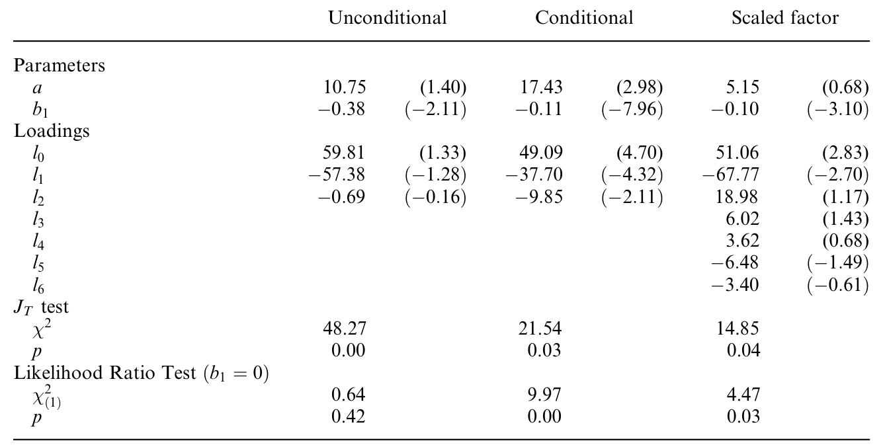
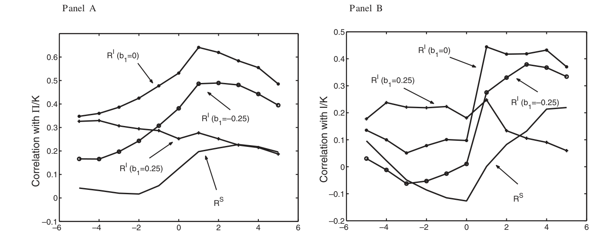
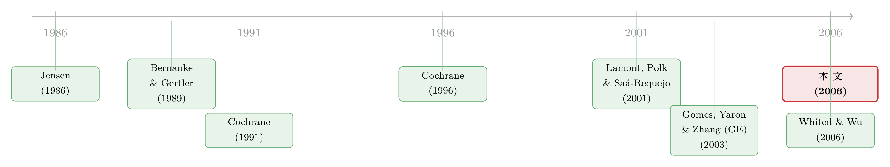

融资约束，为什么偏偏在好年景里更咬人？
本文读的是 Gomes, Yaron & Zhang (2006, Review of Financial Studies)：他们把 金融摩擦 (financial frictions) 塞进一个 投资基础的资产定价 (production-based asset pricing) 框架，用 GMM 直接检验最优投资强加在股票回报上的 欧拉方程 (Euler equation)。结论有两层——融资摩擦确实是一个能改善横截面定价的共同因子；更出人意料的是，外部融资的影子成本是强顺周期的，也就是说，金融摩擦在经济相对好的时候反而更重要。
1 引言：一个被反复说、却很少被「定价」的词
「融资约束」大概是公司金融里被引用最多、却最难被量化的词之一。我们都相信它存在：外部融资（增发新股、举新债）从来不是内部现金流的完美替代品；信息不对称、代理冲突、交易成本，会在内、外部资金之间打进一道楔子。可一旦要问得更尖锐些——
融资约束究竟是不是一个系统性的风险因子？它会不会进入投资者的 随机贴现因子 (stochastic discount factor, SDF)，从而被定价到股票的横截面收益里去？
这个问题听起来抽象，但它恰恰是 Lamont, Polk & Saá-Requejo (2001) 与 Whited & Wu (2006) 这一脉文献的命门。他们的做法大体是「先构造一个融资约束的代理变量，再看它能不能解释收益」。这当然有用，但总隔着一层：你用一个特征去解释收益，却说不清这个特征为什么该被定价、它背后的金融摩擦到底长什么样。
Gomes, Yaron & Zhang（下称 GYZ）想换一种打法。他们不再问「哪个特征能解释收益」，而是回到企业的最优投资决策本身——既然企业是前瞻性的，那么它在均衡里愿意投下去的每一块钱，背后都隐含着一个「投资回报」。而最优性意味着，这个投资回报必须满足一条和股票回报一模一样的定价方程。于是融资摩擦不再是一个外生贴上去的标签，而是从企业的一阶条件里「长」出来的。
这正是 投资基础的资产定价 (investment-based / production-based asset pricing) 的精神：与其去市场上找因子，不如让企业的生产技术「告诉」我们因子是什么。（关于这条思路的源头与一次严厉的再检验，可参见《一个「成功」的模型，为什么经不起逐年对账？》。）
接着，一个自然的问题是：把金融摩擦塞进这套框架，到底会改变什么？答案藏在一个极其干净的代数恒等式里。我们先把它推出来。
2 模型：把金融摩擦写成一道「相对价格的楔子」
2.1 摩擦的最简表示
GYZ 没有再发明一套关于摩擦「为什么存在」的微观基础，而是去总结这条文献的共同地基：外部资金贵于内部资金。他们用两个价格把这件事说清楚。
考虑新股融资。设企业发行 \(N_t\) 美元新股，令 \(W_t\) 表示每一美元新股对老股东索取权的折损。在无摩擦世界里必有 \(W_t = 1\)（融资决策不改变企业价值，MM 定理）；而交易成本、代理问题或择时动机，都会让 \(W_t \neq 1\)。同样，企业也可以发一期债 \(B_{t+1}\)，令 \(R_t\) 表示每美元债务的（本息合计）偿付，无摩擦时它应等于内部资金的机会成本 \(R_{ft}\)；任何摩擦都会让 \(R_t \neq R_{ft}\)。
妙处在于：要导出关键的定价限制，你根本不需要写清 \(W_t\)、\(R_t\) 的具体形式。 这让模型既薄又通用。
2.2 企业的价值最大化问题
企业为现有股东最大化价值 \(V_t\)，在每期选择下期资本 \(K_{t+1}\)、债 \(B_{t+1}\)、新股 \(N_t\) 与股利 \(D_t\)：
$$V(K_t, B_t, S_t) = \max_{D_t,\,B_{t+1},\,K_{t+1},\,N_t}\Big\{\, D_t - W_t N_t + E\big[M_{t+1}\,V(K_{t+1}, B_{t+1}, S_{t+1})\big] \,\Big\}$$
其中 \(S_t\) 概括所有不确定性，\(M_{t+1}\) 是企业所有者的随机贴现因子。约束是资源约束：
$$D_t = \Pi(K_t, S_t) - I_t - \frac{a}{2}\left(\frac{I_t}{K_t}\right)^2 K_t + N_t + B_{t+1} - R_t B_t$$
资本积累方程：
$$I_t = K_{t+1} - (1-\delta) K_t$$
以及两条不等式约束（股利有下界、新股非负）：
$$D_t \ge \underline{D}, \qquad N_t \ge 0$$
这里有两处值得停一下。第一，投资带有 凸性（二次）调整成本 (convex adjustment costs)，强度由参数 \(a\) 控制——没有它，资本的价格永远是 1，回报里的「资本利得」分量恒为零，明显与现实不符。第二，内部现金流函数 \(\Pi(\cdot)\) 的具体形式无关紧要，只需假设它规模报酬不变。
2.3 关键一步：投资回报的分解
对 \(K_{t+1}\) 求一阶条件，令 \(\lambda_t\) 为股利下界约束的拉格朗日乘子（它正是外部融资的影子价格），可以得到那条核心的欧拉方程：
$$E\big(M_{t+1}\, R^I_{t+1}\big) = 1$$
其中 \(R^I_{t+1}\) 是投资于实物资本的回报：
$$R^I_{t+1} = \frac{(1+\lambda_{t+1})\big[\theta_{t+1} + \tfrac{a}{2} i_{t+1}^2 + (1+a\,i_{t+1})(1-\delta)\big]}{(1+\lambda_t)(1+a\,i_t)}$$
这里 \(i \equiv I/K\) 是投资资本比，\(\theta \equiv \Pi/K\) 是利润资本比。
然后——这是整篇文章最漂亮的一步——把 \(R^I_{t+1}\) 拆成两块：
\(\tilde{R}^I_{t+1}\) 是无金融约束（\(\lambda_{t+1}=\lambda_t=0\)）时的投资回报，完全由基本面 \(i\) 和 \(\theta\) 驱动。金融摩擦的角色，被完整地装进了 \((1+\lambda_{t+1})/(1+\lambda_t)\) 这一项里。
但真正关键的洞察是这句话：如果 \(\lambda_t = \lambda_{t+1}\)，融资摩擦对回报毫无影响。 此时它只是永久性地压低了企业价值，却不产生回报的时间序列变动。换言之——
从资产回报的角度看，影子价格的绝对水平无关紧要；真正被定价的，是它的周期性波动。这句话把后面所有的实证都钉死了：检验融资约束是否被定价，等价于检验 \(\lambda_t\) 是否随经济周期系统性地起落，以及朝哪个方向起落。
于是反转的伏笔已经埋下：决定融资摩擦「重不重要」的，不是它有多大，而是它在好年景和坏年景之间摆动得有多厉害、往哪个方向摆。
3 识别策略：让投资回报当因子，用 GMM 审问它
3.1 把 SDF 参数化
GYZ 的实证内核，是去检验
$$E\big(M_{t+1}\, R_{t+1}\big) = 1$$
其中 \(R_{t+1}\) 是一篮子被定价的资产回报（股票、债券，以及来自上面那条方程的实物投资回报）。沿着 Cochrane (1996) 的做法，他们问：投资回报能不能充当资产回报的因子？ 形式上，把随机贴现因子写成投资回报的线性函数：
$$M_{t+1} = l_0 + l_1\, R^I_{t+1}$$
这本质上是一个结构版的 APT——把 Fama-French (1993, 1996) 或 Lamont-Polk-Saá-Requejo (2001) 那类多因子框架里的「某个因子代理了总体融资状况」这件事，用企业的最优性条件显式地推导了出来。融资摩擦要被定价，当且仅当它通过 \(R^I\) 进入了定价核、成为一个共同因子。
3.2 影子价格的参数化——识别的命脉
接下来这一步是整套识别的命脉。既然回报只关心 \(\lambda_t\) 的时间变动，那就把影子价格写成一个总体金融摩擦指数 \(f_t\) 的线性函数：
$$\lambda_t = b_0 + b_1\, f_t$$
由 §2.3 的结论，水平项 \(b_0\) 不影响回报、是不可识别的（实务上直接固定它）；全部信息都在 \(b_1\) 里。\(b_1\) 连同 \(f_t\) 的周期性，就完全刻画了金融摩擦对回报的影响——既包括「重不重要」（\(b_1\) 是否显著），也包括「朝哪个方向」（\(b_1\) 的符号配上 \(f_t\) 的周期性）。
那 \(f_t\) 用什么？主测度是 违约溢价 (default premium)，即 Baa 与 Aaa 评级公司债的收益率之差。Stock & Watson (1989, 1999) 证明它是总体经济状况最有力的预测变量之一，也是文献里外部融资溢价的常用代理（Kashyap-Stein-Wilcox 1993；Bernanke-Gertler 1995 等）。稳健性里还换用了 Lamont-Polk-Saá-Requejo (2001) 的融资约束回报因子，以及 Vassalou & Xing (2003) 的总体困境概率。
这里藏着方向的玄机。违约溢价是逆周期的（坏年景升高）。如果估计出来的影子价格是顺周期的（好年景升高），那么 \(\lambda_t\) 与违约溢价就该是负相关——这正是论文的核心发现所指向的图景。
3.3 GMM 的三套矩条件
用 GMM 估计因子载荷 \(l\) 和参数 \(a\)、\(b_1\)，矩条件就是 \(E(M_{t+1}R_{t+1})=1\)。Cochrane (1996) 式地，分三层逼问：
- 无条件矩：最弱的限制，直接最小化定价误差的加权平方和 \(J_T = g_T' W g_T\)，并做 \(\chi^2\) 的 过度识别检验 (test of over-identifying restrictions)。一个便利之处是，给定成本参数后，目标函数对载荷 \(l\) 是线性的。
- 条件矩：用工具变量 \(z_t\) 去 scale 回报，\(E(p_t \otimes z_t) = E[M_{t,t+1}(R_{t+1}\otimes z_t)]\)，提取条件含义（Hansen & Richard 1987）。
- 时变载荷：让 \(l\) 随工具变量变动，\(M_{t+1} = (l_0 + l_1 R^I_{t+1})\otimes z_t\)，从而容纳非线性关系。
工具变量取 期限溢价 (term premium，10 年期与 3 月期之差) 和等权 NYSE 组合的股息价格比。
4 数据
宏观数据来自 美国经济分析局 (BEA) 的 国民收入与产出账户 (NIPA) 与美联储的 资金流量账户 (Flow of Funds)，两者交叉一致。构造投资回报需要利润、投资、资本三项；折旧率 \(\delta\) 由资本消耗数据的时间序列均值定出，是唯一未被正式估计的技术参数。为避开早期链式加权的测量问题，宏观样本从 1954 年第一季度到 2000 年第四季度，主用非金融公司部门。
资产端，股票债券回报来自 CRSP 与 Ibbotson，会计信息来自 Compustat。基准定价资产是众所周知具有横截面离散度的 Fama-French 25 个规模/账面市值比组合（取自 French 的数据库）。此外还用了一系列事前预期在融资约束上有差异的组合：NYSE 规模十分位、现金流资产比十分位、利息覆盖率十分位、按规模 × 账面市值比 × KZ 指数的 \(3\times3\times3\) 共 27 个组合，以及按规模 × WW 指数的 \(3\times3\) 共 9 个组合。
KZ 指 Kaplan & Zingales (1997) 指数，WW 指 Whited & Wu (2006) 指数。Whited & Wu 论证 KZ 指数判定为「受约束」的公司往往规模大、过度投资、有债券评级，所以他们的指数更能抓住融资约束的特征。（关于「融资约束究竟该怎么测、它有几个源头」，可参见《同样是「借不到钱」，原因却各不相同》。）
描述统计里有两个数字值得记住。控制了规模和账面市值比后，KZ 零投资组合的月均收益是 \(-0.30\%\)，t 值 $-2.73$——与 Lamont-Polk-Saá-Requejo (2001) 的证据一致，融资约束因子确实显著。而 WW 零投资组合的月均收益只有 \(0.18\%\)，t 值 \(0.95\)，并不显著。
5 主要结果：摩擦是因子，而且强顺周期
把这套机器开动起来，论文得到了两层结论。
第一层，融资摩擦确实是一个能改善定价的共同因子。 一旦把影子价格的周期性变动 \(b_1 f_t\) 放进投资回报、再放进定价核，模型对 Fama-French 25 组合及那些按融资约束排序的组合的横截面定价显著改善。这意味着 \(\lambda_t\) 的波动并非企业层面的特异噪声，而是携带了系统性风险——它进得了 SDF。
第二层，也是更反直觉的一层：外部融资的影子成本是强顺周期的。 也就是说，金融摩擦在经济条件相对好的时候反而更重要。这和「教科书直觉」正好拧着：我们通常以为信贷紧、外部融资贵的时刻是衰退（逆周期摩擦，如 Bernanke-Gertler 1989 的金融加速器）。但 GYZ 的估计指向相反的图景——它更贴合那类强调代理冲突的理论（Jensen 1986）：当经济好、经理人手里闲钱太多时，内外部资金之间的楔子反而被拉大。
这正是这套结构方法比「特征回归」多出来的那块价值：它不止能说「融资摩擦重要」，还能用 \(\lambda_t\) 的动态性质，去区分相互竞争的摩擦理论。 逆周期的楔子会降低理论投资回报与实际股票回报的相关性，削弱标准投资基础模型的表现；而一个顺周期的影子成本，反而会强化模型的实证成功——后者正是数据偏爱的方向。
Table 3 是在基准设定之外、对影子价格设定做拓展的稳健性检验，结论方向不变。

Table 3: departs from our benchmark specification by augmenting the
而金融摩擦如何作用于投资回报，Figure 2 给出了直观的刻画。

Figure 2: also shows how the effect of financing on investment returns
这些结果对宏观与公司金融文献的含义是双向的：它既给「融资约束被定价」提供了结构化的证据，又用影子价格的顺周期性，给出了一把区分各派摩擦理论的尺子。
6 文献脉络
这条线的源头是 Cochrane (1991, 1996)。他第一个系统地探索了企业最优生产与投资决策对资产价格的含义——既然投资回报和股票回报在均衡里要被同一个 SDF 定价，那就可以反过来用投资回报当因子去检验横截面。GYZ 这篇正是踩在 Cochrane (1996) 的肩膀上，把金融摩擦这一块补了进去。

往前一点的背景，是宏观里关于金融摩擦如何放大经济波动的两大传统：Bernanke & Gertler (1989) 的金融加速器（逆周期摩擦），和 Jensen (1986) 的自由现金流代理成本（顺周期摩擦）。GYZ 的影子价格顺周期发现，恰恰站在后者一边。（关于 Jensen 这条自由现金流暗线的再读，可参见《现金为什么一定要「还」出去？》。）
往实证资产定价一侧看，GYZ 与 Lamont, Polk & Saá-Requejo (2001)、Whited & Wu (2006) 的「融资约束是风险因子」结论一致，但路径不同：后两者从特征/代理变量入手，GYZ 则显式地为这个因子写出微观结构。与作者自己更早的 Gomes, Yaron & Zhang (2003a) 相比——那篇用一个高度风格化的一般均衡模型，论证了要同时匹配股权溢价与典型商业周期事实，外部融资成本必须顺周期——本文则放松了那种简化设定，给了一个更适合做实证的通用框架。再往后，Li (2003) 与 Whited & Wu (2006) 在公司层面把这套思路接着往下做。
7 评论与延伸（Q&A + 研究方向）
(a) 几个可能的疑问
Q：这篇和「先造一个融资约束指数、再跑回归」的做法，本质区别在哪？
区别在「因子从哪来」。特征回归是把一个外生构造的代理变量丢进右边，你能得到相关性，却说不清它为何该被定价、对应的摩擦长什么样。GYZ 让因子从企业一阶条件里内生地长出来——融资摩擦的全部作用被精确地浓缩在 \((1+\lambda_{t+1})/(1+\lambda_t)\) 这一项，于是「检验摩擦」就变成了「检验影子价格的周期性」，结构清晰，还能反过来区分摩擦理论。
Q：为什么影子价格的「水平」不能被识别，只能识别它的变动？
因为 §2.3 的恒等式说得很死：若 \(\lambda_t=\lambda_{t+1}\)，那一比值就是 1，摩擦对回报毫无贡献，只是永久性地压低了企业价值。回报只对 \(\lambda\) 的时间差敏感。所以 \(b_0\) 不可识别、被直接固定，全部信息都在 \(b_1\)（即 \(\lambda\) 对 \(f_t\) 的敏感度）里。这也是为什么作者反复强调「周期性才是关键」。
Q：「摩擦在好年景更重要」是不是和常识反着来？
表面看是。我们习惯把信贷紧缩想成衰退现象（逆周期）。但顺周期的影子成本更贴合代理类理论：经济好、现金流充裕时，经理人与外部投资者之间的代理楔子被放大；而且从纯实证拟合看，顺周期的 \(\lambda\) 会强化投资回报与股票回报的相关性，逆周期则削弱它——数据偏爱前者。
Q：用违约溢价当 \(f_t\)，会不会只是抓到了别的宏观风险，而非「融资摩擦」？
这是最实在的担忧。违约溢价是极强的总体经济状况预测变量，它既含信用/融资信息，也含一般的商业周期信息，二者难以干净剥离。作者的应对是换测度——用 LPS (2001) 的融资约束回报因子、Vassalou-Xing (2003) 的困境概率——结论方向不变。但严格说，识别仍依赖「违约溢价主要代理外部融资溢价」这一先验。
Q：调整成本参数 \(a\) 为什么不能省？
没有调整成本，资本的影子价格恒为 1，投资回报里就没有资本利得分量，模型机械地把回报压成了基本面比率，明显反事实。\(a\) 让资本价格能够偏离 1，使回报有时间序列变动可言——它是让整个投资回报「活起来」的前提。
Q：基准为什么要用 Fama-French 25 组合，而不只用按融资约束排序的组合？
因为 FF25 在平均收益上有公认的、大幅的横截面离散度，是检验任何定价核的「硬骨头」。先在 FF25 上证明融资因子能改善定价，再用按 KZ/WW 排序的组合验证它在「该有约束差异」的地方确实起作用，逻辑上更有说服力。
(b) 几个可能的研究问题与提案
1. 把这套影子价格搬到公司债横截面去
【经济故事】GYZ 的 SDF 在一般情形下还应依赖公司债回报（作者在 2003b 的技术附录里点到）。既然外部融资影子成本是顺周期的，那么信用利差里「融资约束」那一块的定价，是否也呈顺周期？这能把权益侧的发现搬到信用市场做交叉验证。 【可行性】中。数据上需要 TRACE 的公司债回报 + 发行人层面的投资/利润（Compustat）；识别上可沿用 GMM 把投资回报当因子去定价公司债组合。难点是公司债回报的流动性噪声较大，需要先做干净的流动性调整。
2. 外资持有人会不会改变企业感受到的影子成本周期性？
【经济故事】若外资持有人在好年景顺周期地涌入、坏年景撤出，他们可能放大或熨平企业外部融资的影子成本波动。把 \(\lambda_t\) 的估计按外资持股比例分组，看顺周期性是否随外资敞口而变。 【可行性】中偏低。需要跨国的企业层面外资持股数据（如 FactSet/EPFR）与投资/利润数据；识别上可用 MSCI 纳入这类准自然实验切外资敞口。挑战是把企业层面的 \(\lambda\) 估计干净，结构 GMM 在小样本里不稳。
3. 逐年/逐周期重估这套投资基础模型
【经济故事】《一个「成功」的模型，为什么经不起逐年对账？》 提醒我们，投资基础模型的「总体成功」可能在逐年对账时崩塌。GYZ 的全样本结论是否在子周期（如 1954–1980 vs 1980–2000）里稳定？影子价格的顺周期性会不会只在某一段成立？ 【可行性】高。数据与方法都现成，就是把样本切段重估 \(b_1\) 与 \(J\) 检验，再做滚动窗口。这是一个低成本、却能显著检验稳健性的练习。
4. 用更直接的外部融资溢价代理替换违约溢价
【经济故事】违约溢价混入了太多一般周期信息。能否用更贴近「外部融资贵不贵」的市场化指标（如增发折价、SEO 公告效应的总体指数、银行贷款利差）当 \(f_t\)，看顺周期结论是否依旧？ 【可行性】中。SEO/增发数据（SDC）与贷款利差（DealScan）都可得；难点是这些指标本身样本较短、且内生于企业选择，需谨慎处理。
8 参考文献
Bernanke, B., and M. Gertler (1989). Agency Costs, Net Worth, and Business Fluctuations. American Economic Review 79, 14–31.
Cochrane, J. H. (1991). Production-Based Asset Pricing and the Link Between Stock Returns and Economic Fluctuations. Journal of Finance 46, 209–237.
Cochrane, J. H. (1996). A Cross-Sectional Test of an Investment-Based Asset Pricing Model. Journal of Political Economy 104, 572–621.
Fama, E. F., and K. R. French (1993). Common Risk Factors in the Returns on Stocks and Bonds. Journal of Finance 33, 3–56.
Fama, E. F., and K. R. French (1996). Multifactor Explanations of Asset Pricing Anomalies. Journal of Finance 51, 55–84.
Gomes, J. F., A. Yaron, and L. Zhang (2003a). Asset Prices and Business Cycles with Costly External Finance. Review of Economic Dynamics 6, 767–788.
Hansen, L. P., and S. Richard (1987). The Role of Conditioning Information in Deducing Testable Restrictions Implied by Dynamic Asset Pricing Models. Econometrica 55, 587–613.
Jensen, M. (1986). The Agency Costs of Free Cash Flow: Corporate Finance and Takeovers. American Economic Review 76, 323–330.
Kaplan, S., and L. Zingales (1997). Do Financing Constraints Explain Why Investment Is Correlated with Cash-Flow? Quarterly Journal of Economics 112, 168–216.
Lamont, O., C. Polk, and J. Saá-Requejo (2001). Financial Constraints and Stock Returns. Review of Financial Studies 14, 529–554.
Stock, J. H., and M. W. Watson (1989). New Indexes of Coincident and Leading Economic Indicators. NBER Macroeconomics Annual, MIT Press, 352–394.
Vassalou, M., and Y. Xing (2003). Default Risk in Equity Returns. Journal of Finance (forthcoming).
Whited, T. M., and G. Wu (2006). Financial Constraints Risk. Review of Financial Studies (forthcoming).